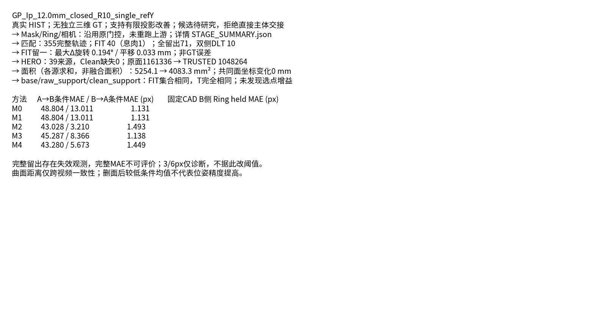
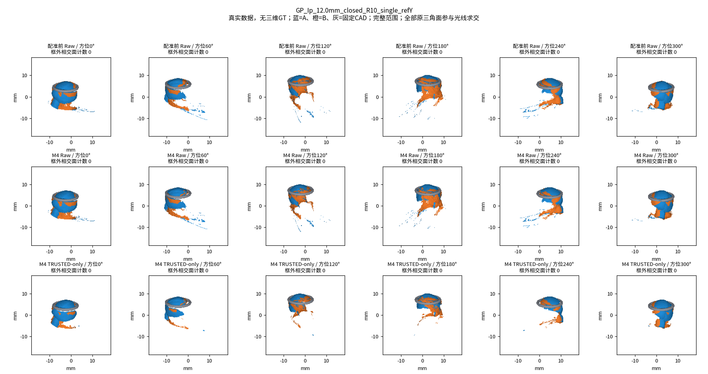
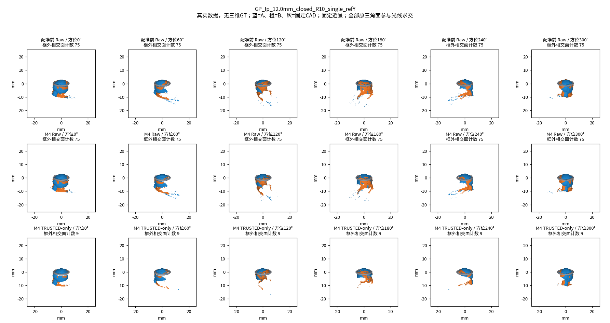
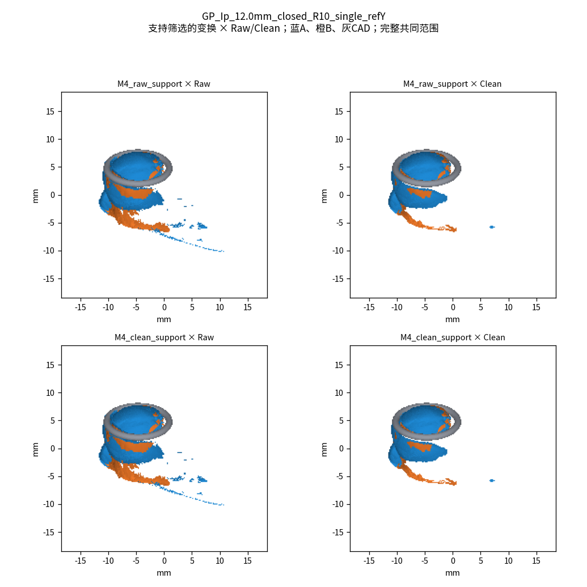
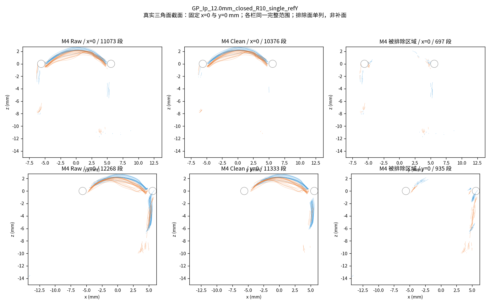
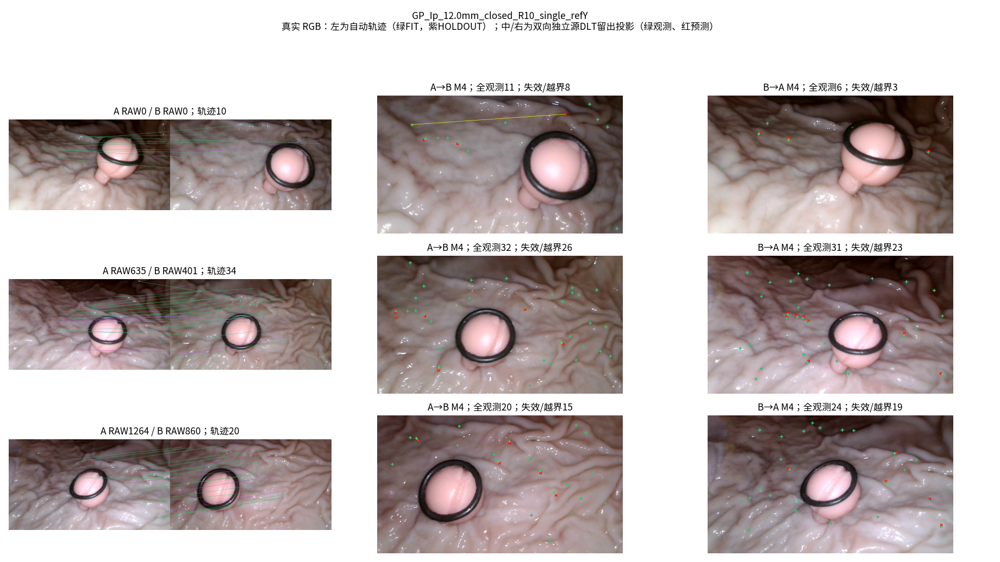
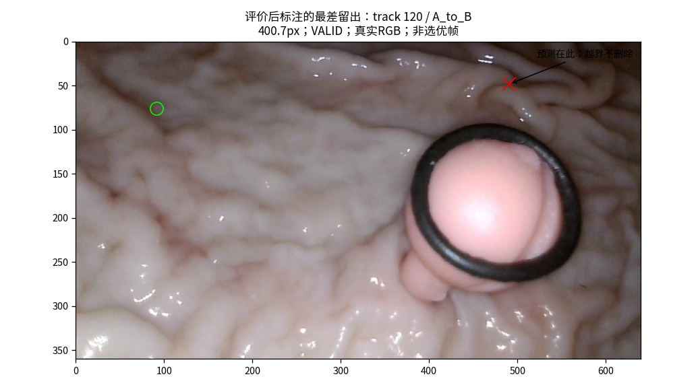

A=GP_Ip_12.0mm_closed_R10_single_refY_004；B=GP_Ip_12.0mm_closed_R10_single_refY_005
Raw来源39；Clean缺失0；复用0；FIT 40 / 全轨迹 355；全留出 71。无真实三维GT。下表仅有限投影的条件MAE，完整分母及失效见结果JSON；不是完整留出均值。

| 方法 | 数值 | 求解质量标记 | A→B px | B→A px | 双侧独立DLT轨迹 | 最低支持量 |
|---|---|---|---|---|---|---|
| M0 | FIXED | UNREGISTERED | 48.8 | 13.01 | 10 | True |
| M1 | FIXED | YAW_UNIDENTIFIABLE | 48.8 | 13.01 | 10 | True |
| M2 | ACCEPT | UNASSESSED | 43.03 | 3.21 | 10 | True |
| M3 | CONVERGED | UNASSESSED | 45.29 | 8.37 | 10 | True |
| M4 | CONVERGED | UNASSESSED | 43.28 | 5.67 | 10 | True |
| M4_raw_support | CONVERGED | UNASSESSED | 43.28 | 5.67 | 10 | True |
| M4_clean_support | CONVERGED | UNASSESSED | 43.28 | 5.67 | 10 | True |
所有方法完整留出包含不可三角化观测，完整MAE不可评价。M4两支持分支集合未改变，T完全相同；不能宣称Clean提升位姿。





